MATH 3315 Project 2 - Root Acquisition - By Zack Fout
Contents
Part 1. The Characteristic Function of a Dielectric Slab Waveguide
An optical waveguide is a physical structure that guides electromagentic waves in the optical spectrum. Optical waveguides have many important engineering applications where they are typically used as the transmission medium for optical communications systems. The Slab Waveguide is a theoretical dielectric structure that is used to understand practical rectangular-geometry optical waveguides. The characteristic function of this waveguide is given by:
 ,
,
where
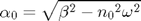
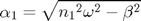
and 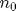, 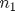 are the refractive indices of the dielectric layers, 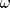 is the frequency of the guided wave and 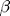 is the propagation constant. In order to determine which optical waves are guided by the waveguide, the equation
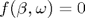
must be solved for where is a given parameter. If the refractive indices are fixed at 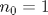 and 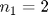, then different values of may be evaluated in order to determine the exact where the characteristic function is equal to zero. Note that from the definitions of 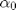 and 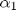 it is clear that real values of 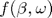 may only be computed over the interval 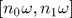. The following MATLAB® code evaluates the characteristic function for a given value of 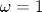 and plots the resulting curve:
omega = 1.0; beta = omega * linspace(1, 2, 1000); % calculate interval of betas for i = 1 : 1000 y(i) = waveguide(beta(i), omega); % compute waveguide function end % The following code plots and formats the waveguide function figure('Units', 'pixels', ... 'Position', [100 100 750 800]); hold on; figLine = line(beta, y); set(figLine, ... 'LineStyle', '-', ... 'LineWidth', 2, ... 'Color', 'c'); hTitle = title('Characteristic Function of a Dielectric Slab Waveguide'); hXLabel = xlabel('Frequency $$(\omega)$$'); hYLabel = ylabel('$$f(\beta, \omega)$$'); set([hXLabel, hYLabel], ... 'FontSize', 20, ... 'Interpreter', 'latex'); set(hXLabel, 'Position', get(hXLabel, 'Position') - [0 .3 0]); set(hYLabel, 'Position', get(hYLabel, 'Position') - [.04 0 0]); set(hTitle, ... 'FontName', 'Courier 10 Pitch', ... 'FontSize', 14, ... 'FontWeight', 'bold'); brace1 = drawbrace([1.54, -.4], [1.54, .5], 8, 'Color', 'k'); brace2 = drawbrace([1.60, .5], [1.60, -.4], 8, 'Color', 'k'); hLegend = legend(figLine, ... '$$f(\beta, \omega)$$', ... 'Location', 'east'); set(hLegend, ... 'FontSize', 16, ... 'Interpreter', 'latex'); set(gca, 'FontName', 'Helvetica'); set(gca, ... 'Box', 'off', ... 'TickDir', 'out', ... 'TickLength', [.02 .02], ... 'XMinorTick', 'on', ... 'YMinorTick', 'on', ... 'YGrid', 'on', ... 'GridLineStyle', '--', ... 'YTick', -2:2:6, ... 'XColor', [.3 .3 .3], ... 'YColor', [.3 .3 .3], ... 'LineWidth', 1);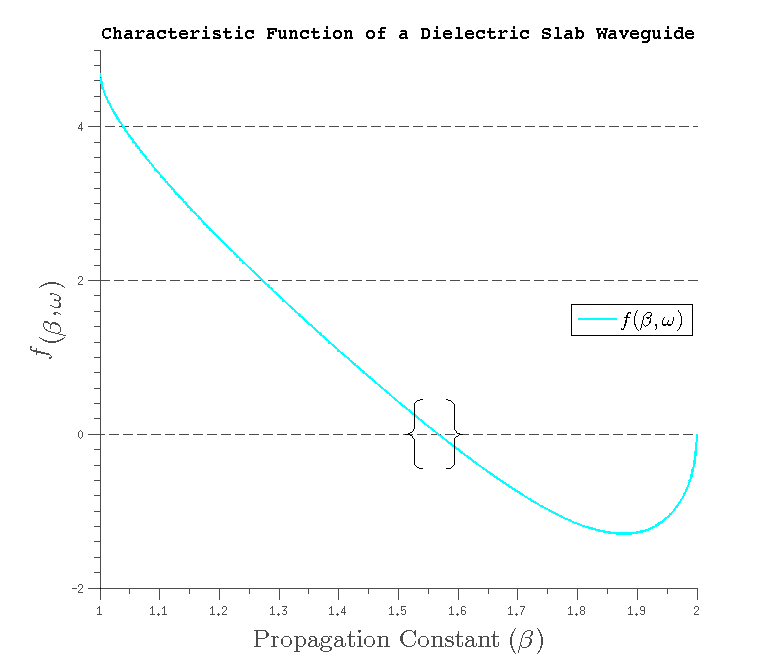
As you can see by visually inspecting the graph, the solution to the equation lies somewhere between the values 1.56 and 1.57.